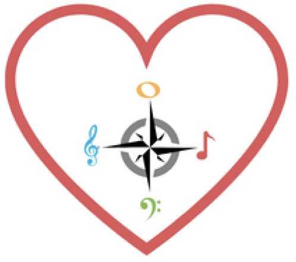

Sistema Student Compass
Data-driven wellbeing assessment for music education programs
Context & Problem
Music education programs, particularly El Sistema-inspired initiatives focused on social impact, often lack systematic tools to monitor students’ emotional wellbeing, engagement and learning experience. While music participation is widely associated with positive developmental outcomes, these effects frequently remain unmeasured. As a result, student needs can go unheard, teaching effectiveness is difficult to assess in real time and program impact is hard to document for long-term sustainability and funding.
Educators and administrators are therefore required to make pedagogical and strategic decisions with limited quantitative feedback, especially in under-resourced contexts where large-scale evaluation studies are impractical.
Project Overview
Sistema Student Compass is a digital platform designed to integrate music education with structured wellbeing assessment. The system combines short, curriculum-embedded student surveys with automated data analysis to provide actionable insights for students, teachers, parents and program administrators.
Grounded in validated psychological frameworks, the platform enables continuous monitoring of students’ emotional and social experience alongside their musical participation. Rather than functioning as an external evaluation tool, Student Compass is conceived as an integral part of daily music-making activities, minimizing disruption while maximizing data quality and relevance.
System Design & Core Components
Wellbeing measurement
The platform incorporates validated psychological models, including the PERMA framework. The PERMA Model of Wellbeing, developed by psychologist Martin Seligman, is a framework for human flourishing based on five core elements: Positive Emotion, Engagement, Relationships, Meaning and Accomplishment. It offers a holistic approach to building a fulfilling life beyond momentary happiness and is widely used in positive psychology for personal growth and organizational development. Surveys are short, age-appropriate and designed to be completed regularly during program activities.
Curriculum-integrated interaction
Wellbeing check-ins are embedded within musical tasks and gamified interactions, encouraging reflection and engagement without interrupting instructional flow. This design allows even quieter or more withdrawn students to communicate their experience in a low-pressure, anonymous way.
Automated data analysis and reporting
Collected data are processed through statistical models to generate differentiated reports for stakeholders:
- Students and parents receive individual wellbeing profiles
- Teachers receive aggregated, anonymized class-level feedback on engagement and comprehension
- Program directors receive longitudinal indicators of program effectiveness, retention risk and impact
Scalability and deployment
Designed as a web-based system deployable across mobile and desktop platforms, Student Compass supports multi-site data collection, regional comparison and long-term program evaluation.
Conceptual Framework
Impact
By making student wellbeing measurable and visible, Student Compass supports earlier intervention, improved student retention and more responsive teaching strategies. At the organizational level, the platform enables music programs to articulate their impact through quantitative evidence, strengthening accountability to funders and supporting long-term sustainability.
The system reframes evaluation not as an external requirement, but as an ongoing feedback loop that informs curriculum design, teaching practice and strategic planning.
Future Directions
Future development of Student Compass focuses on its use as a longitudinal evaluation framework for music programs addressing social change. By enabling consistent data collection over extended time spans and across multiple sites, the platform is designed to support comparative and longitudinal analyses of student wellbeing, engagement and retention within and between programs.
This approach opens the possibility of modeling how sustained participation in music education influences psychological and social outcomes over time, particularly in under-resourced contexts. Aggregated, anonymized datasets can inform evidence-based curriculum design, contribute to impact evaluation at the organizational and network level, and support research on the long-term role of music education in social development.
Planned extensions include advanced longitudinal analytics, cross-program benchmarking and integration with research workflows, positioning Student Compass as both an operational tool for practitioners and a research infrastructure for studying music programs for social change.